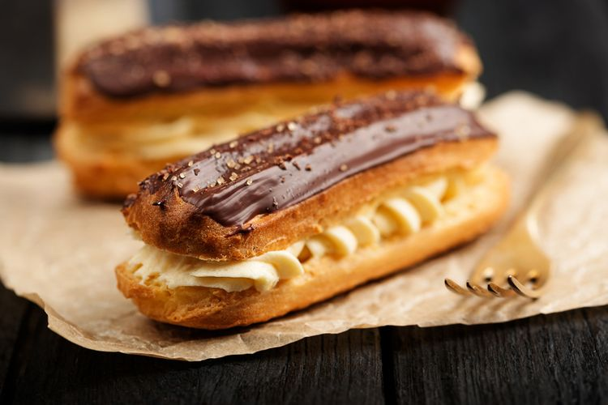

These elongated pastries with an appealing glaze, a crispy exterior, a soft doughy interior, and a sweet, creamy center originated in France at the turn of the 20th century. Éclairs (French for lightning) are believed to have received their name because of how the light would reflect off of them after a coating of confectioner’s glaze.
Meal prep time : 1 hour 45 minutes
Servings : 6